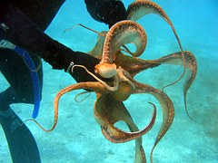
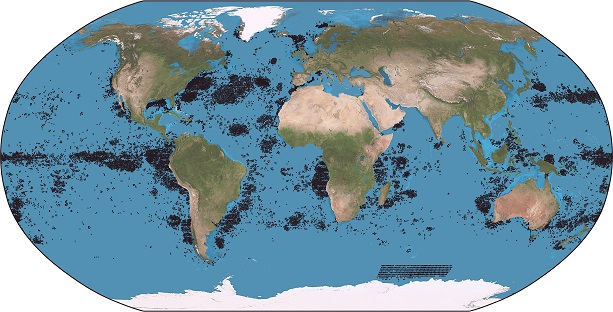

Was sind Pottwale?
Pottwale sind Säugetiere und sind Großwal und gehören zu der Gruppe Zahnwale. Sie leben überall in den Ozeanen und die Paarungszeit ist das ganze Jahr über. Sie sind stark vom Aussterben bedroht.

Pottwale sind Säugetiere und sind Großwal und gehören zu der Gruppe Zahnwale. Sie leben überall in den Ozeanen und die Paarungszeit ist das ganze Jahr über. Sie sind stark vom Aussterben bedroht.
Sie essen am liebsten Tintenfische. Sie gehen selber nicht jagen, da Tintenfische meist die Pottwale angreifen.
Pottwal Männchen sind größer und schwerer als die Pottwal Weibchen. Große Pottwale erreichen eine Länge von 20 Metern und Gewichte von 50 Tonnen und sind damit die größten bezahnten Tiere der Erde. Sie können bis zu 3000 Meter tief tauchen. Die Pottwal weibchen werden ca 12 Meter lang und nur ca 15 Tonnen Gewicht. Das Gehirn wiegt ungefähr 9,5 Kilo. Sie müssen wir menschen auch Luft holen und ihr „Luftloch“ ist vorne am Kopfende und sie können bis zu 90 Minuten tauchen. Sie bestehen aus Fett um den Druck des Wassers auszuhalten. Sie leben in Gruppen von etwa fünfzehn bis zwanzig Tieren. Die Tragezeit wird auf 10 bis 17 Monate geschätzt. Sie sind stark vom aussterben bedroht und das Fleisch ist einer der beliebtesten Arten.
